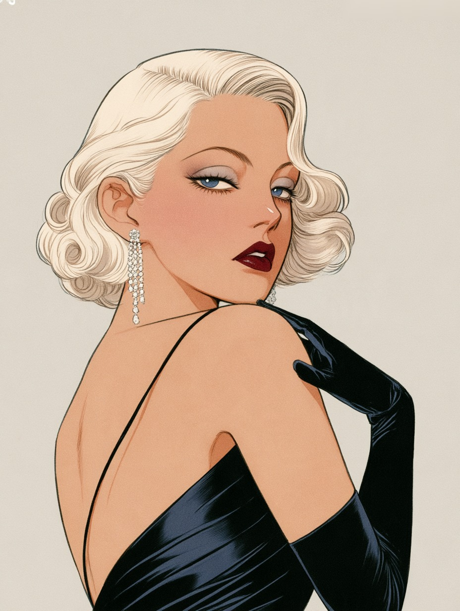
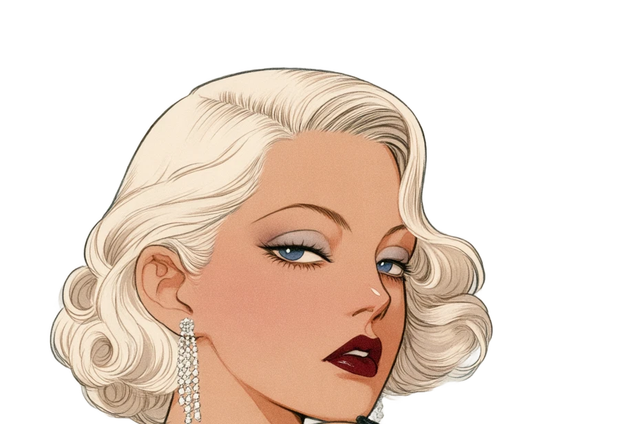
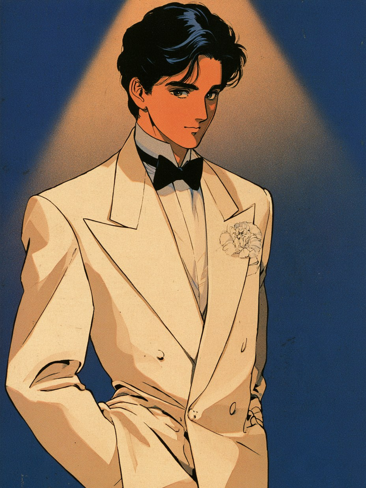
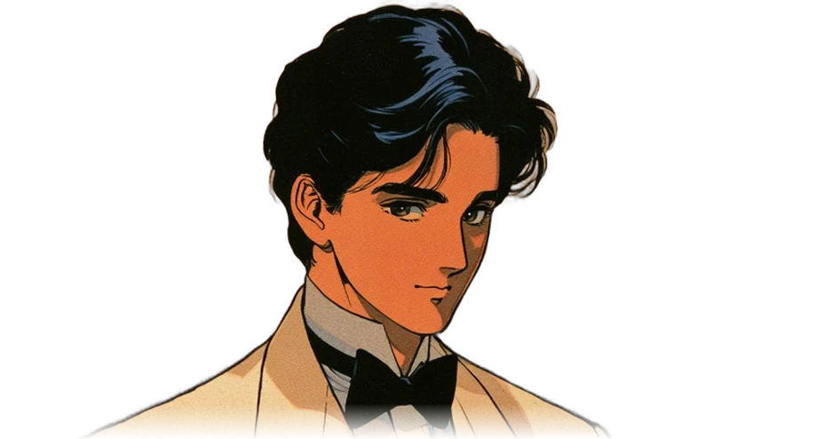
Contents
Nine years later,할리우드
두 번째 출장지는 1934년의 할리우드다. 이번 호는 모델도 새로 섭외했다. 플래티넘 블론드를 턱선 길이의 웨이브로 세팅하고, 눈썹은 가늘게 뽑아 높은 아치로 그린 얼굴. 남자 모델 역시 새 얼굴이다.
치맛단은 다시 내려왔다. 낮에는 종아리 중간, 밤에는 바닥까지. 원단을 사선으로 재단한 바이어스 컷 드레스는 몸의 곡선을 따라 흘러내렸고, 등은 깊게 파였다. 남자들의 어깨는 넓어졌고 바지 허리는 배꼽 위로 올라갔다.
1934년 7월 1일부터 할리우드 영화는 심의 승인서 없이 개봉할 수 없게 됐다. 같은 해 뉴욕에서는 『하퍼스 바자』가 알렉세이 브로도비치를 아트 디렉터로 맞았다.
스크린이 단속을 시작한 해,
편집부는 스크린 밖의 옷장을 열었다.
— ÉPOQUE 편집부, 1985년 서울
여성 룩 다섯 벌 — 스튜디오에서 비행장까지
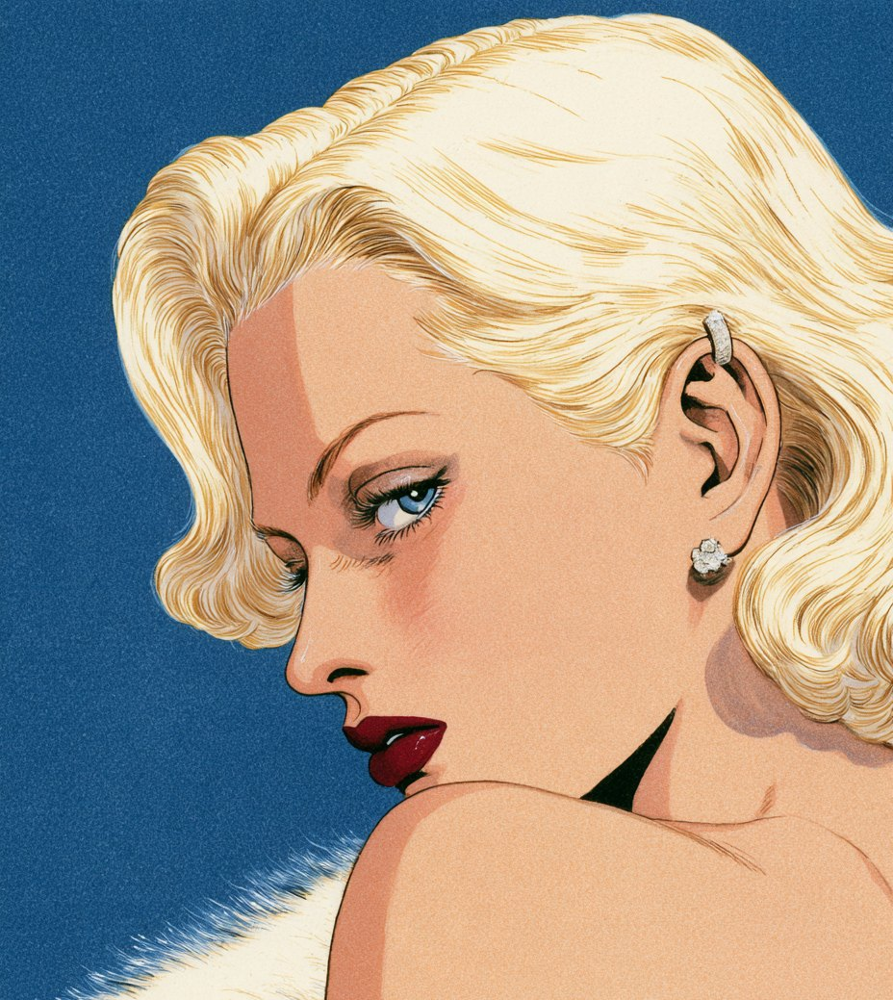
플래티넘의 해
- HAIR
- 턱선 길이 플래티넘 웨이브, 깊은 옆가르마
- BROWS
- 가늘게 뽑아 높은 아치로 다시 그린 눈썹
- LIPS
- 입술선을 꽉 채운 다크 레드
- JEWELRY
- 다이아몬드 클립 이어링
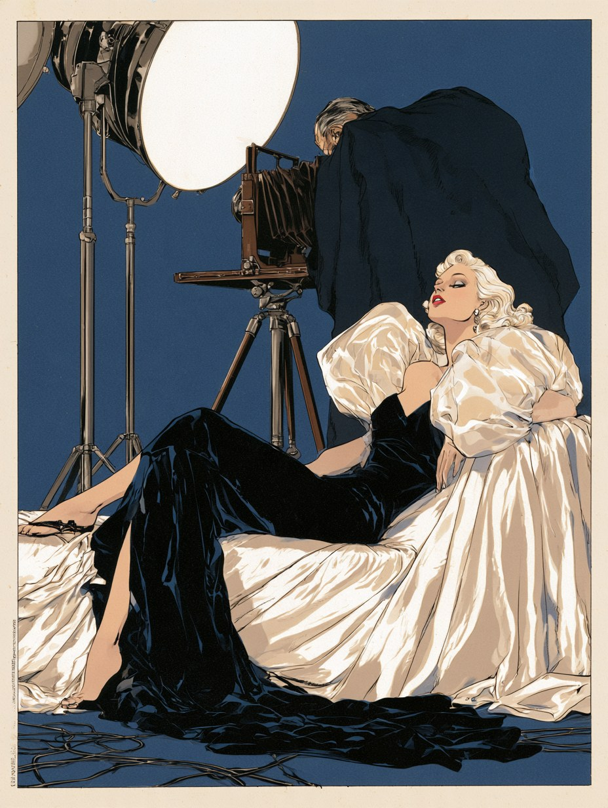
스타를 찍는 방
한 장의 포트레이트를 위해 거대한 조명이 차례로 켜지고, 사진가는 대형 뷰 카메라의 검은 천 아래로 들어간다. 위에서 내리꽂는 단단한 빛과 깊은 그림자가 이 시대 글래머 사진의 문법이었다.
- GOWN
- 블랙 벨벳 이브닝 가운, 바닥까지 떨어지는 슬림한 바이어스 컷 스커트
- SLEEVES
- 어깨를 크게 부풀린 오간자 퍼프 소매
- SHOES
- 블랙 펌프스
보여지기 위한 계단
1934년 선셋 스트립에 문을 연 카페 트로카데로는 곧바로 스타들이 ‘보이러’ 가는 곳이 됐다. 이곳에서 찍힌 밤의 사진이 다음 날 업계지에 실렸다. 등을 깊게 판 바이어스 컷 가운은 계단을 내려가는 뒷모습을 위해 만든 옷처럼 보였다.
- GOWN
- 바닥에 끌리는 실버 새틴 바이어스 컷 가운, 깊게 파인 등과 홀터 스트랩
- STOLE
- 화이트 폭스
- GLOVES
- 팔꿈치 위까지 오는 화이트 이브닝 글러브
- JEWELRY
- 다이아몬드 브레이슬릿
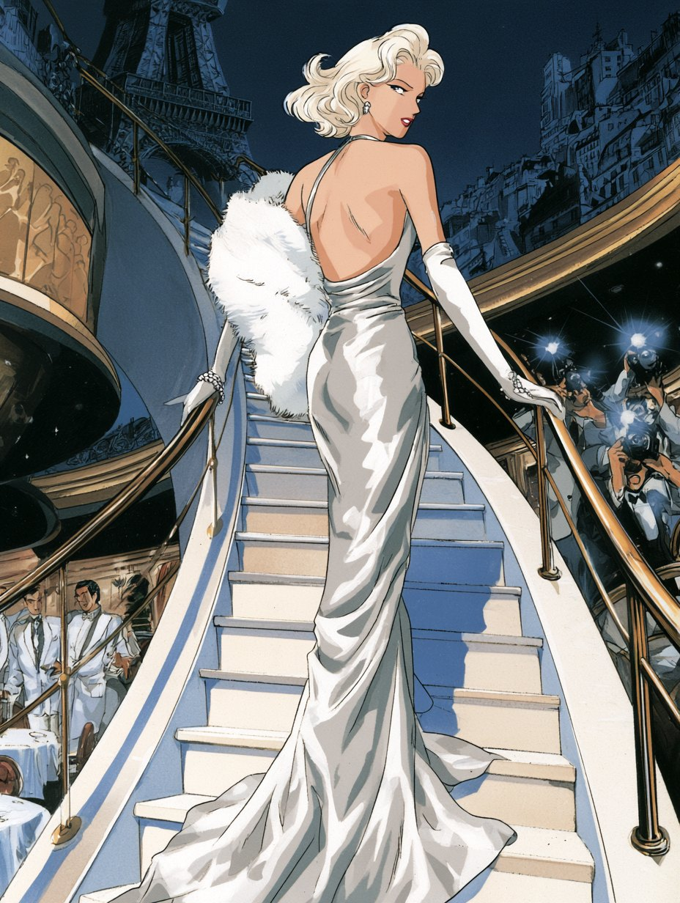
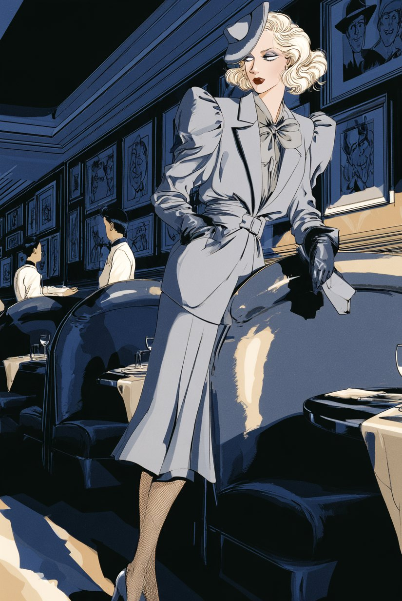
낮의 스타는 수트를 입는다
밤의 가운과 달리 낮의 옷은 단정하다. 어깨는 넓게, 허리는 벨트로 잘록하게, 스커트는 종아리 중간까지. 작은 모자는 한쪽 눈 위로 비스듬히 얹는다.
- SUIT
- 도브 그레이 울 스커트 수트, 패드를 넣은 넓은 어깨와 벨티드 웨이스트
- BLOUSE
- 목에 리본을 맨 실크 블라우스
- HAT
- 한쪽으로 기울여 쓴 작은 챙 모자
- GLOVES
- 레더 쇼트 글러브
집 밖으로 나온 파자마
해변의 유행은 비치 파자마였다. 원래 집 안에서 입던 라운지 파자마에서 온 옷이라, 그걸 입고 밖에 나간다는 것 자체가 작은 스캔들이었다. 바람이 불 때마다 통 넓은 바지가 돛처럼 부푼다.
- PAJAMAS
- 홀터넥 탑과 통 넓은 하이웨이스트 와이드 팬츠, 미드나잇 블루 단 장식
- HAT
- 챙 넓은 스트로 햇
- EYEWEAR
- 라운드 선글라스
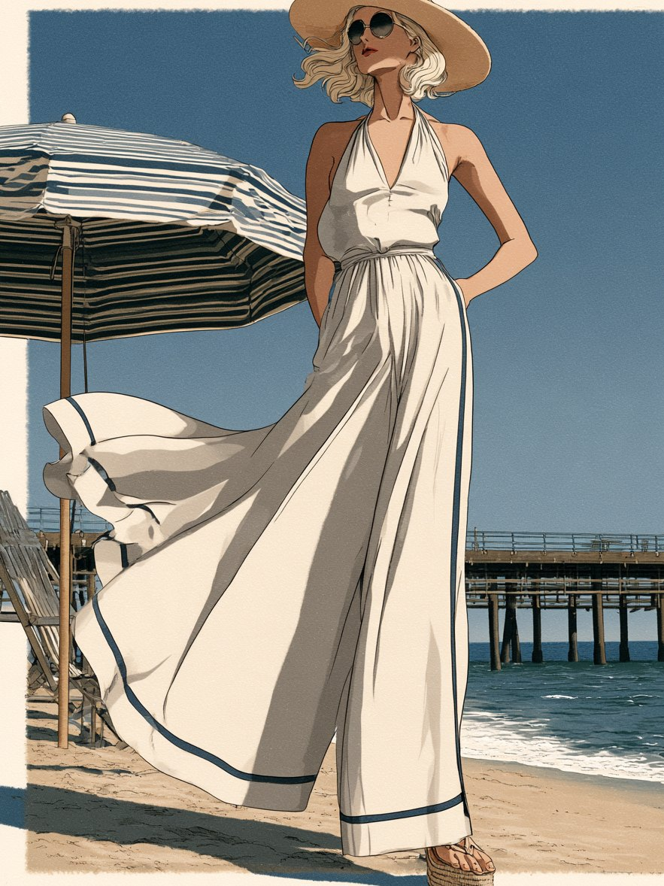
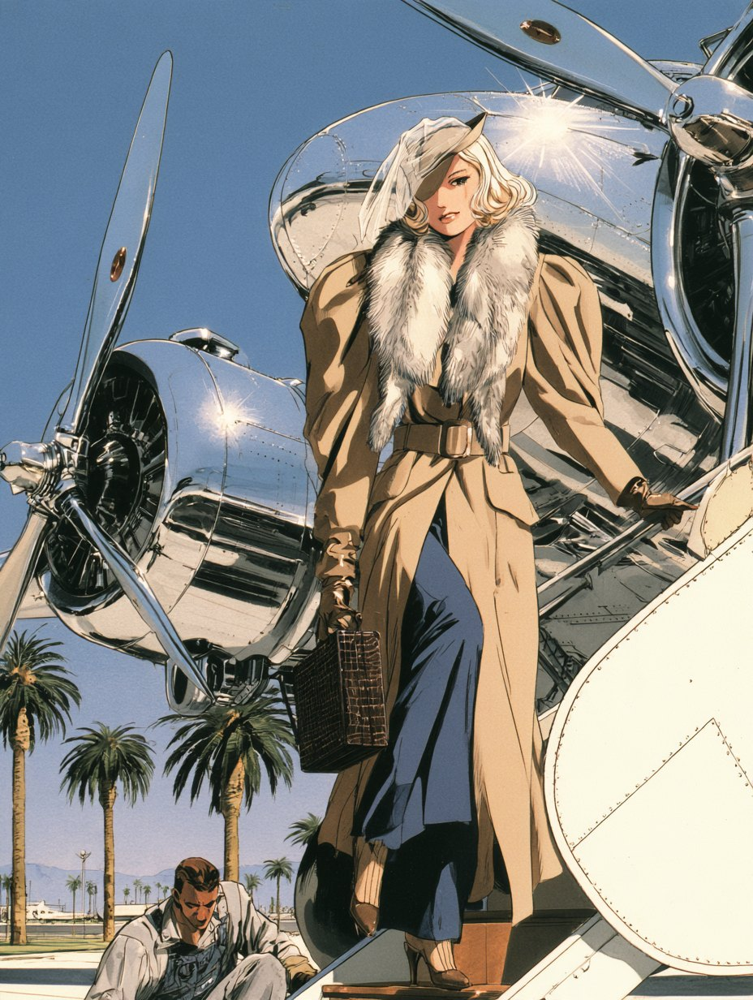
은빛 날개로 떠나는 사람
번쩍이는 은빛 프로펠러기와 그 앞의 카멜 코트. 넓은 어깨와 커다란 폭스 칼라가 이 시대 여행복의 실루엣이다. 1934년의 여자는 외출할 때 모자를 빼놓지 않았다. 한쪽 눈 위로 기울여 쓰고, 짧은 베일을 내린다.
- COAT
- 폭스 칼라를 단 카멜 울 롱코트
- HAT
- 한쪽 눈 위로 기울인 작은 펠트 모자, 짧은 네트 베일
- GLOVES
- 레더 글러브
- CASE
- 크로커다일 베니티 케이스
남성 룩 여섯 벌 — 나이트클럽에서 경마장까지
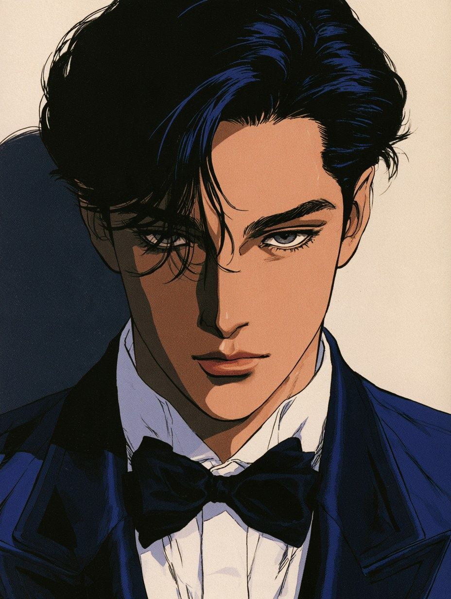
머리는 더 이상 납작하지 않다
- HAIR
- 윗머리를 길게 남겨 웨이브를 살린 옆가르마, 이마로 흘러내린 앞머리 한 가닥
- SKIN
- 수염 없이 매끈하게 면도한 얼굴
- JACKET
- 새틴 라펠의 미드나잇 블루 디너 재킷
- TIE
- 블랙 실크 보타이
검정보다 깊은 파랑
계단 아래, 같은 밤의 트로카데로. 조끼 없이 입는 더블브레스트 디너 재킷은 1930년대 초에 크게 유행했다. 색은 검정 대신 미드나잇 블루. 인공조명 아래에서는 검정보다 더 검게 보이는 색이라, 1935년에는 미드나잇 블루 턱시도 원단이 검정보다 많이 짜일 정도였다.
- JACKET
- 블랙 새틴 숄칼라의 미드나잇 블루 더블브레스트 디너 재킷, 조끼 없이
- TROUSERS
- 새틴 사이드 스트라이프를 넣은 같은 색 하이웨이스트 와이드 트라우저
- SHIRT · TIE
- 주름 잡힌 화이트 드레스 셔츠, 블랙 실크 보타이
- SHOES
- 블랙 페이턴트 레더 펌프스
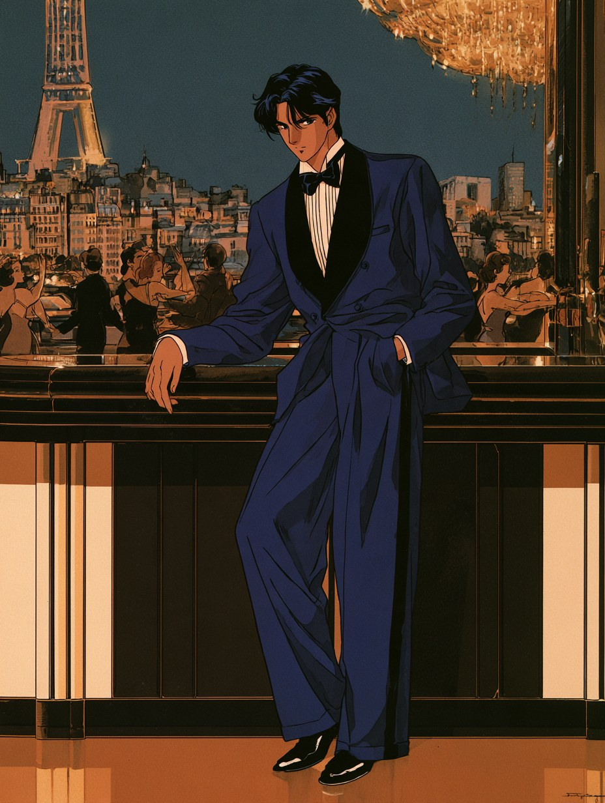
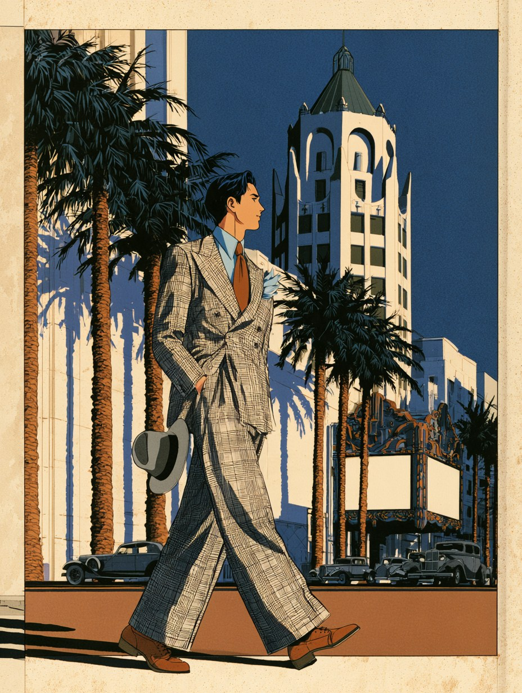
왕세자의 체크, 왕세자의 스웨이드
런던 재단사들이 만든 드레이프 컷이 1930년대 남자의 몸을 바꿨다. 어깨와 가슴에 여유를 두고 허리를 잡아 V자 실루엣을 만든다. 원단은 영국 왕세자가 즐겨 입어 ‘프린스 오브 웨일스’라는 이름이 붙은 글렌 체크다. 도시의 수트에 갈색 스웨이드 구두를 신는 것도 왕세자가 퍼뜨린 파격이었다.
- SUIT
- 그레이 프린스 오브 웨일스 체크 더블브레스트 드레이프 수트, 넓은 피크드 라펠
- TROUSERS
- 하이웨이스트 와이드 레그, 주름과 턴업 커프스
- SHIRT · TIE
- 페일 블루 셔츠, 러스트 실크 타이
- SHOES
- 브라운 스웨이드 구두
- HAT
- 손에 든 그레이 페도라
등을 보여 주는 재킷
촬영이 없는 오후의 백롯. 1930년대 할리우드의 스포츠 재킷은 뒷모습에 공을 들였다. 등에 주름을 잡아 팔을 크게 움직일 수 있게 한 액션백, 허리 뒤에만 두른 하프 벨트. 수트 대신 재킷과 바지를 서로 다른 원단으로 맞춰 입는 것도 이 시대의 새 차림이었다.
- JACKET
- 탄 헤링본 트위드 스포츠 재킷, 뒤 허리 하프 벨트
- SLACKS
- 하이웨이스트 플리츠 슬랙스
- NECKWEAR
- 크림 셔츠에 페이즐리 실크 애스콧
- SHOES
- 브라운 앤 화이트 스펙테이터 슈즈
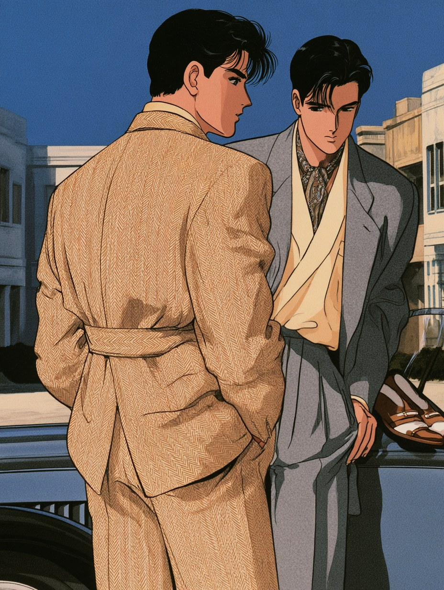
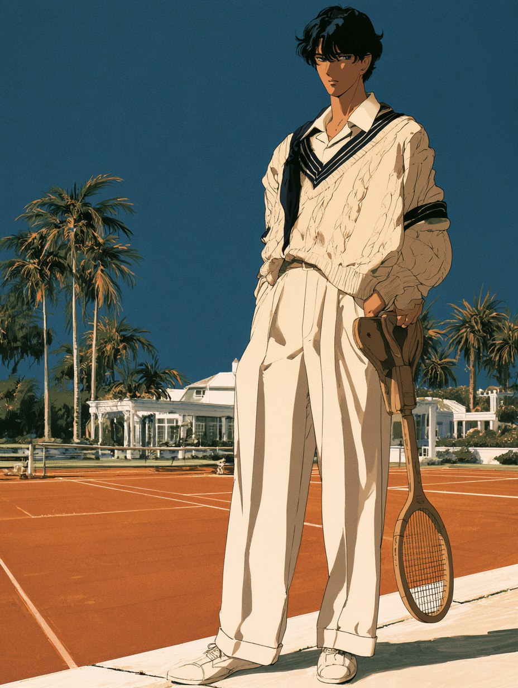
윔블던의 해, 흰 옷의 남자
1934년 윔블던 우승자 프레드 페리는 긴 흰 플란넬 바지를 입고 코트에 섰다. 코트 밖에서는 V넥 둘레에 클럽 색 줄을 넣은 케이블 니트를 어깨에 걸치거나 입는다. 테니스 코트의 흰 옷은 그대로 휴양지의 낮 옷이 됐다.
- KNIT
- 네이비 줄을 넣은 크림 케이블 니트 V넥 크리켓 스웨터
- TROUSERS
- 주름을 넣은 하이웨이스트 화이트 플란넬 롱 트라우저
- SHOES
- 화이트 캔버스 테니스화
- RACKET
- 프레스에 끼운 목제 라켓
막 태어난 셔츠
테니스 선수 르네 라코스트가 자기 이름을 단 니트 폴로 셔츠를 내놓은 것이 1933년. 1934년 여름의 폴로 셔츠는 막 나온 새 옷이었다. 바지는 벨트 대신 허리 양옆의 버클로 조이는 할리우드 웨이스트밴드, 허리선은 배꼽 위까지 올라간다.
- SHIRT
- 네이비 반소매 니트 폴로 셔츠
- SLACKS
- 크림 개버딘 하이웨이스트 슬랙스, 사이드 버클 할리우드 웨이스트밴드와 더블 플리츠
- SHOES
- 화이트 캔버스 데크 슈즈
- ACCESSORY
- 대모갑 라운드 선글라스, 스트라이프 비치 로브
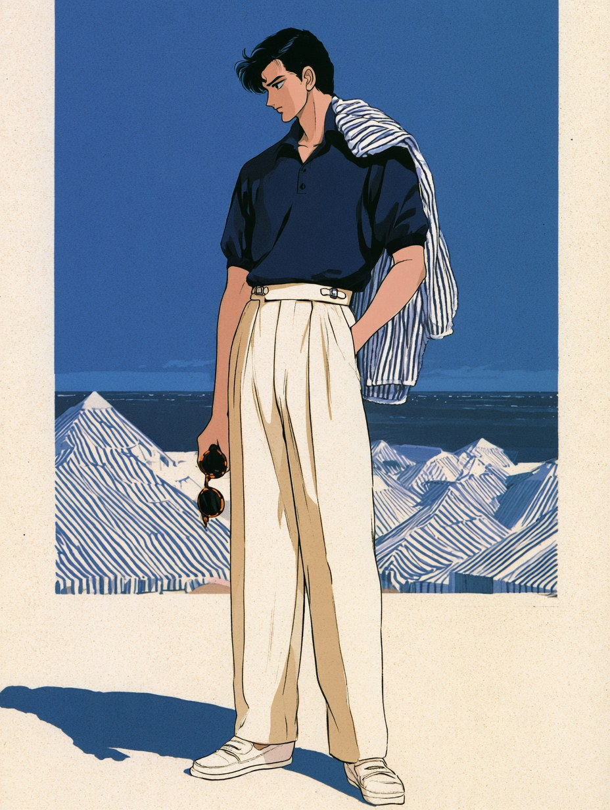
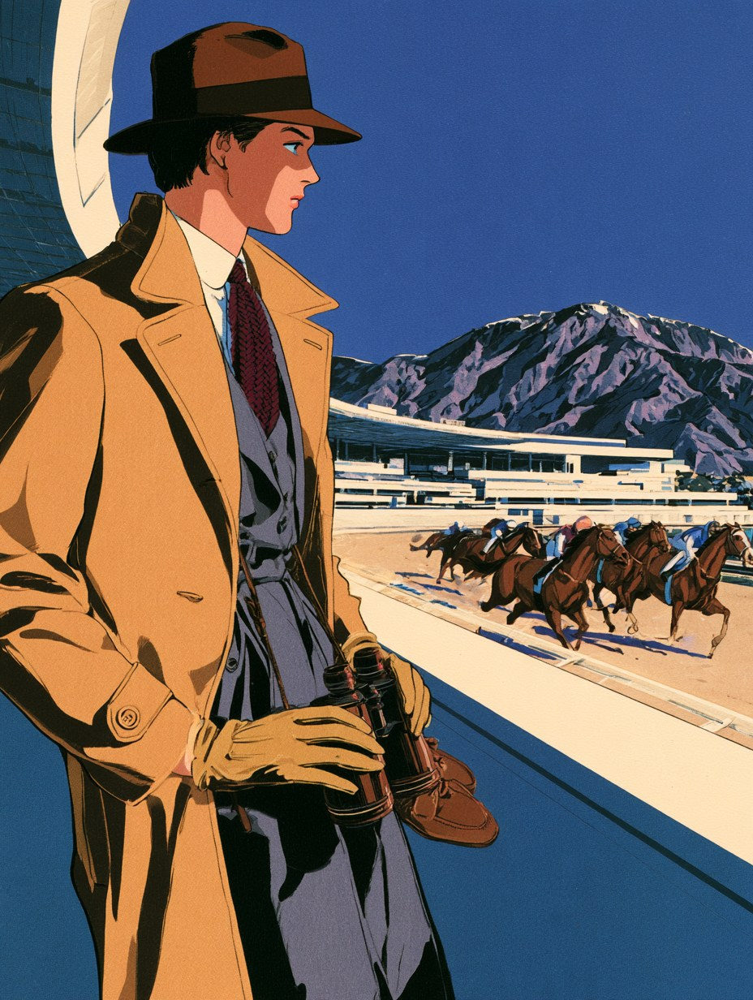
크리스마스의 경마장
1934년 크리스마스, 아케이디아에 아르데코 양식의 산타 아니타 경마장이 문을 열었다. 겨울 햇살 아래 관중석의 남자들은 카멜 헤어 폴로 코트를 수트 위에 걸쳤다. 원래 폴로 경기 사이에 선수들이 걸치던 코트가 도시의 겨울 코트가 된 것이다.
- COAT
- 카멜 헤어 폴로 코트, 넓은 라펠
- SUIT
- 그레이 플란넬 수트
- TIE
- 버건디 니트 실크 타이
- HAT · GLOVES
- 브라운 스냅 브림 페도라, 탄 레더 글러브
- PROP
- 쌍안경
1934년, 영화가 바뀌던 해
세 가지 색으로 찍는 영화
1934년, 빨강·초록·파랑을 따로 담는 3색 테크니컬러가 실사 영화에 쓰이기 시작했다. 그해 8월 말 개봉한 단편 「라 쿠카라차」는 이 방식으로 찍은 초기 실사 영화로 이름을 남겼다. 장편은 이듬해에 나온다. 세트장의 감독들은 승마 바지에 롱 부츠를 신었다.
- BREECHES
- 크림 울 승마 바지와 브라운 롱 라이딩 부츠
- KNIT
- 트위드 니트 베스트
- SHIRT
- 소매를 걷어 올린 크림 셔츠
- PROP
- 둘둘 만 대본
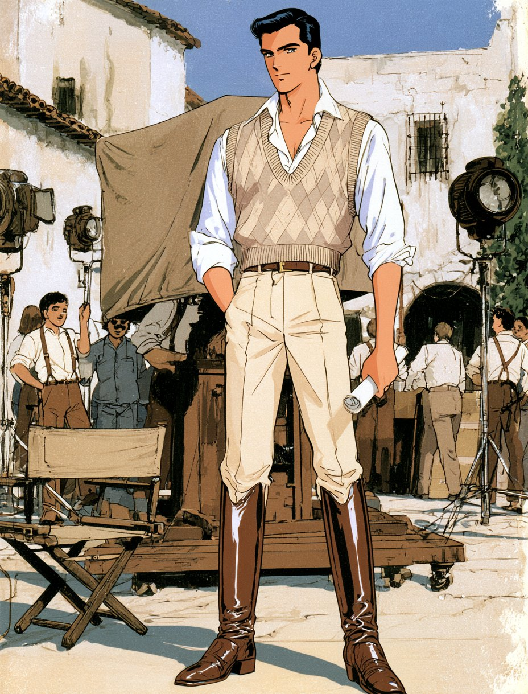
1934
제작 규범은 1930년에 만들어졌지만 오랫동안 제대로 지켜지지 않았다. 1934년 7월 1일, 제작규범관리국(PCA)이 출범하면서 이날 이후의 모든 영화는 승인서를 받아야 개봉할 수 있게 됐다.
그래서 1930년부터 이날까지의 할리우드 영화를 따로 ‘프리코드(Pre-Code)’ 시대라 부른다.
그해
할리우드에서는
- 7.1제작규범관리국 출범, 승인서 없는 영화는 개봉 불가
- 8월 말3색 테크니컬러 실사 단편 「라 쿠카라차」 개봉
- 9월선셋 스트립에 카페 트로카데로 개장
- 12.25아르데코 양식의 산타 아니타 경마장 개장
남녀가 함께 선 장면 셋 — 나이트클럽에서 시사회까지
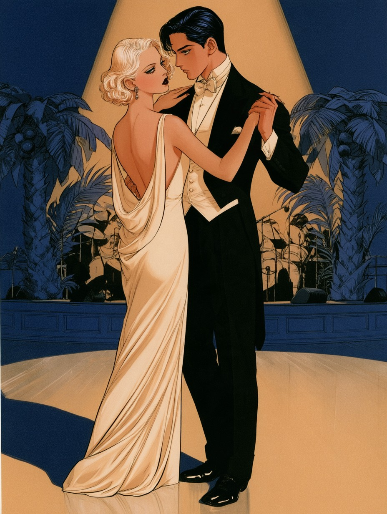
야자수 아래의 폭스트롯
윌셔 대로 앰배서더 호텔의 나이트클럽 코코넛 그로브. 1921년에 문을 연 이곳의 가짜 야자수는 영화 「족장」의 세트에서 가져왔다는 이야기로 유명하다. 스타들은 저녁마다 이 플로어에서 춤을 췄다.
여자는 바이어스 컷 새틴 가운. 옷감을 사선으로 재단해 몸을 따라 흘러내리게 하고, 등은 허리까지 파서 주름을 늘어뜨렸다. 남자는 화이트 타이 — 연미복, 흰 피케 조끼, 윙 칼라. 1930년대 밤의 가장 격식 있는 차림이다.
- GOWN
- 등에 카울 드레이프를 늘어뜨린 크림 새틴 바이어스 컷 이브닝 가운
- TAILCOAT
- 블랙 연미복, 흰 피케 조끼와 보타이, 윙 칼라 셔츠
- SHOES
- 블랙 페이턴트 옥스퍼드
바지를 입은 여자
1930년대 초 마를레네 디트리히가 남성복 바지 정장으로 화제를 모으면서, 해변과 휴양지에서 넓은 바지를 입는 여자들이 늘었다. 발등까지 흘러내리는 리넨 와이드 팬츠에 등을 드러낸 홀터 니트를 맞췄다.
옆에 선 차는 12기통 엔진을 단 패커드의 최고급 라인. 남자는 크림 리넨 수트에 네이비 폴로셔츠를 받쳐 입고, 갈색과 흰색 가죽을 이어 붙인 스펙테이터 구두를 신었다.
- TROUSERS
- 크림 리넨 와이드 팬츠
- TOP · HAT
- 네이비 니트 홀터 톱, 흰 챙 넓은 선햇, 흰 펌프스
- SUIT
- 크림 리넨 수트, 네이비 폴로셔츠
- SHOES
- 브라운 화이트 스펙테이터 구두
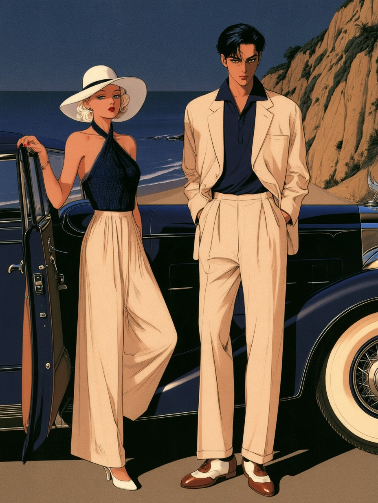
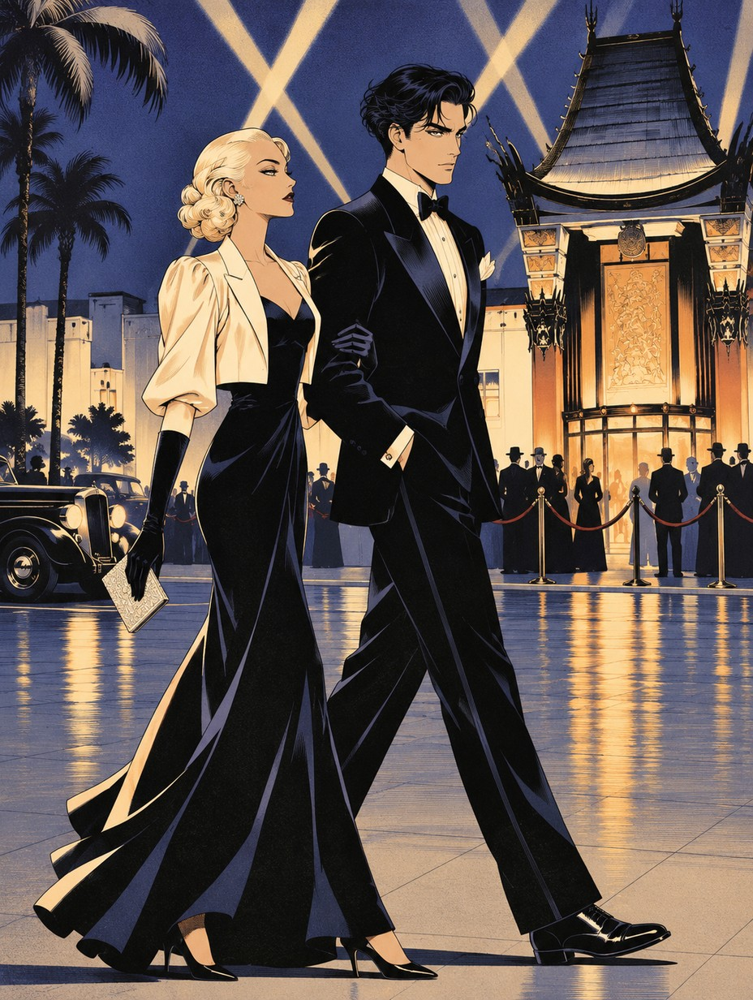
서치라이트 아래
1927년 할리우드 대로에 문을 연 그로먼스 차이니즈 시어터. 탑 모양 지붕 아래 앞마당 시멘트에는 스타들의 손자국과 발자국이 찍혀 있다. 시사회 밤이면 서치라이트가 하늘을 가로질렀다.
여자는 바닥까지 흐르는 검은 이브닝 가운에 소매를 부풀린 짧은 새틴 재킷과 긴 장갑. 남자는 라펠에 새틴을 덧댄 블랙 디너 재킷. 연미복보다 한 단계 가벼운 저녁 차림이다.
- GOWN
- 바닥 길이의 블랙 이브닝 가운
- JACKET
- 퍼프 소매의 크림 새틴 이브닝 재킷
- GLOVES
- 블랙 롱 장갑, 은빛 클러치
- DINNER JACKET
- 블랙 디너 재킷, 블랙 보타이, 페이턴트 슈즈
The Wardrobe
- Issue
- No.02 · The Hollywood Number
September 1934, printed in Seoul 1985 - Locations
- Café Trocadero, Sunset Strip · Hollywood Boulevard · The Cocoanut Grove · Grauman’s Chinese Theatre · A Studio Backlot · Santa Monica · Santa Anita Park, Arcadia
- Layout
- 두 쪽을 펼친 잡지 지면. 1930년대 패션지의 디돈 세리프와 넓은 여백에서 착안
- Produced by
- Concept, Styling & Art Direction — KIM SOY
Illustrations — AI 생성 이미지
ÉPOQUE의 시간 여행은 다음 호에 계속됩니다.